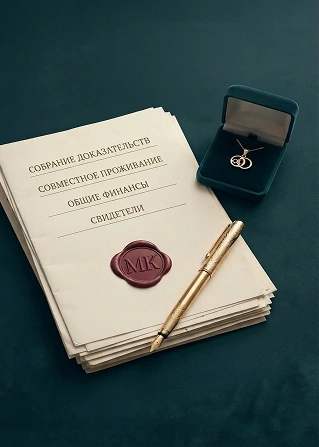

СТУПРО
и воссоединение семьи в Израиле

партнёр или муж
гражданин Израиля
партнёр — иностранец, хочу оформить ему статус
СТУПРО (הליך מדורג) — официальная ступенчатая процедура МВД Израиля для оформления статуса иностранного супруга или партнёра гражданина Израиля. Её же называют воссоединением семьи, а сам процесс — легализацией брака или отношений в Израиле.
Логика такая: МВД не выдаёт постоянный статус сразу. Сначала — временный вид на жительство, потом он продлевается ступенями. На финале — постоянный статус. Отсюда и название: ступенчатая.
Звучит понятно — но на практике именно в документах, записях и сроках МВД кроется большинство проблем.
Израильское право признаёт статус «известных в обществе» — ידועים בציבור, то есть фактических супругов, живущих вместе без регистрации брака. Для МВД это законное основание начать ступенчатую процедуру: получение статуса в Израиле возможно и без регистрации брака.
Разница не в наличии права, а в объёме доказывания. Официальный брак подтверждается одним документом. Совместное проживание приходится доказывать совокупностью: общий адрес, общий быт, общие финансы, длительность и непрерывность отношений
Перечень не фиксирован: МВД оценивает картину целиком и может запросить дополнительные подтверждения. Именно поэтому «собрать по списку из интернета» здесь работает хуже всего — в паре без регистрации нет одного документа, который закрывает вопрос.
Признание совместного проживания — самая частая точка, где паре без брака приходят дополнительные запросы. Мы заранее объясняем, что именно и в каком формате нужно подтвердить, и собираем доказательную базу до первой встречи с МВД, а не после запроса.
не в том формате

в процессе
входит в нашу работу
по СТУПРО
Определяем полный список под вашу ситуацию. Оформляем переводы, апостили, нотариальные заверения. Это основа всей процедуры — именно здесь большинство людей допускают ошибки, которые потом стоят месяцев ожидания.
Определяем полный список под вашу ситуацию. Оформляем переводы, апостили, нотариальные заверения. Это основа всей процедуры — именно здесь большинство людей допускают ошибки, которые потом стоят месяцев ожидания.
Определяем полный список под вашу ситуацию. Оформляем переводы, апостили, нотариальные заверения. Это основа всей процедуры — именно здесь большинство людей допускают ошибки, которые потом стоят месяцев ожидания.
Определяем полный список под вашу ситуацию. Оформляем переводы, апостили, нотариальные заверения. Это основа всей процедуры — именно здесь большинство людей допускают ошибки, которые потом стоят месяцев ожидания.
Определяем полный список под вашу ситуацию. Оформляем переводы, апостили, нотариальные заверения. Это основа всей процедуры — именно здесь большинство людей допускают ошибки, которые потом стоят месяцев ожидания.
Ступенчатая процедура — это годы, а не месяцы. Первый статус временный и продлевается поэтапно; постоянный вид на жительство появляется только в конце пути, а гражданство — отдельный шаг после него, со своими условиями.
Конкретные сроки каждого этапа зависят от вашей ситуации, загрузки МВД и полноты документов. Мы объясняем ориентировочную картину применительно к вашему случаю — без обещаний точных дат.
Что происходит после ступенчатой процедуры:
Гражданство Израиля через брак
Этот список ориентировочный. МВД может запросить дополнительные документы в зависимости от обстоятельств. Подготовка «по списку из интернета» — одна из самых частых причин переноса записи. Мы готовим пакет под вашу конкретную ситуацию и не обещаем исчерпывающий перечень без разбора дела.
и иммиграционному праву
по СТУПРО
Да. Ступенчатая процедура МВД распространяется как на официально зарегистрированных супругов, так и на пары, состоящие в гражданском браке (ידועים בציבור). Важно документально подтвердить реальность отношений и совместного проживания. Конкретный маршрут зависит от вашей ситуации — уточните при первом обращении.
Нет, это принципиально разные вещи. ДНК-тест в иммиграционном контексте используется исключительно для подтверждения биологического родства — например, отцовства или связи с гражданином Израиля. Он не доказывает принадлежность к еврейскому народу и не является основанием для репатриации сам по себе. Кроме того, для МВД нужен юридически оформленный тест — обычный медицинский анализ не подойдёт.
Стоимость зависит от вида и сложности дела. После первичного разбора ситуации мы объясняем условия сопровождения, что именно входит в работу офиса и какие этапы предстоят. Напишите нам — расскажем подробнее применительно к вашему случаю.
Нет. Мы работаем с клиентами по всему Израилю. Консультации проводим онлайн или в офисе. В отдельных случаях возможен выезд к клиенту — формат согласуется индивидуально при первом обращении.
Стараемся ответить в день обращения. У каждого клиента есть общий WhatsApp-чат с командой офиса — это значит, что ваш вопрос не зависит от того, занят ли один конкретный сотрудник. В праздничные дни время ответа может увеличиться — мы предупреждаем об этом заранее.
Адвокат Михаэль Коберг зарегистрирован в Коллегии адвокатов Израиля. Вы можете проверить его лицензию в официальном реестре — ссылка на профиль есть на странице команды. У нас официальный сайт, реальный офис и возможность очной встречи до принятия какого-либо решения.